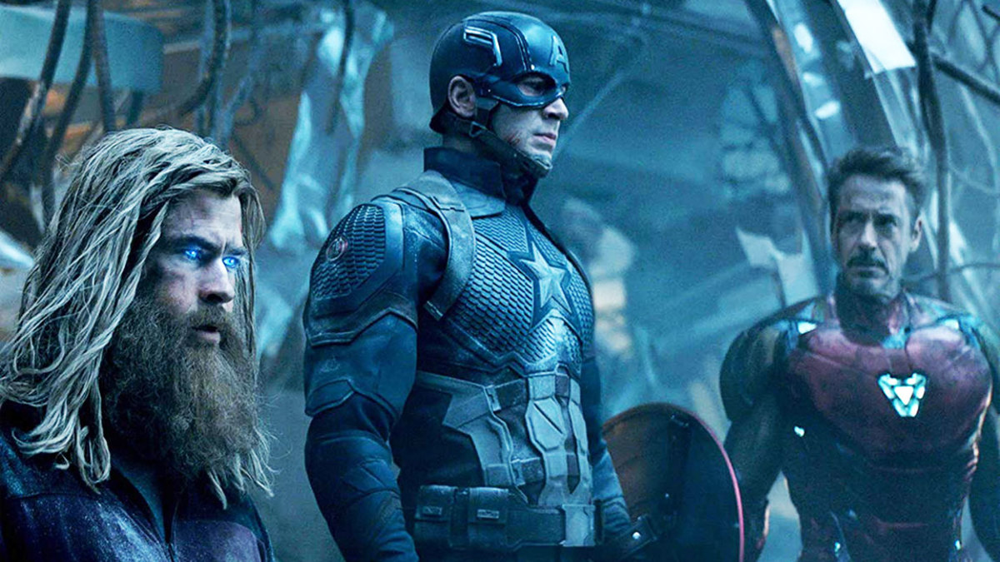
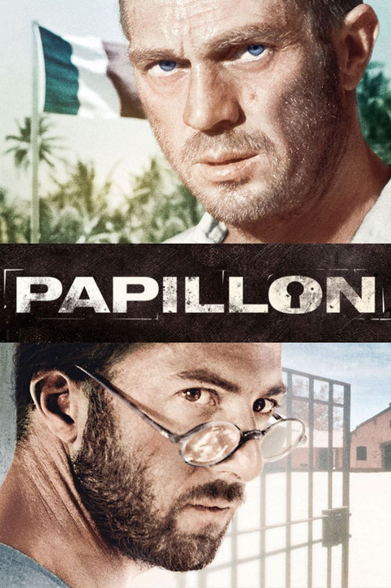

This is my favourite sci-fi movie of all-time! As a viewer, it gives you many thoughts on how big the space really is and how insignificant we, as the human race, are.
"We’ve Always Defined Ourselves By The Ability To Overcome The Impossible." - Joseph Cooper

One of the best Marvel movies in my humble opinion. Endgame is the conclusion of Marvel's 22-film Infinity Saga. Sadly, Marvel started going downhill shortly after. Still, this movie made history books with its' box office numbers - 2.799 billion dollars.
"Avengers, Assemble!" - Captain America
This movie tells a story of Henry "The Papillon" Charriere and his friend, Louis Dega, who end up serving time together in the penal colony of French Guyana. If you want to see Dustin Hoffman and Steve McQueen in their prime, this is a movie for you.
"A temptation resisted is a true measure of character." - Louis Dega
